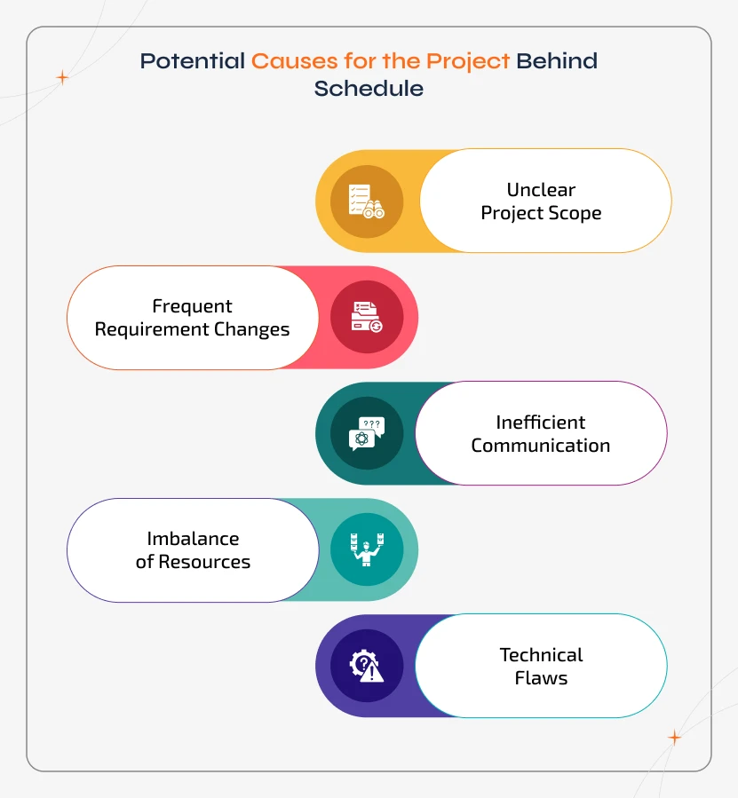
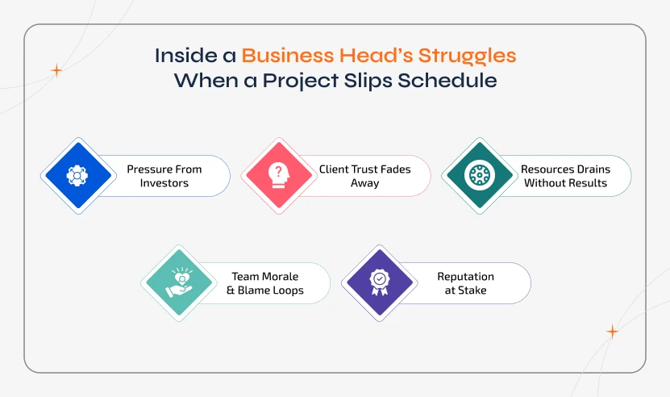
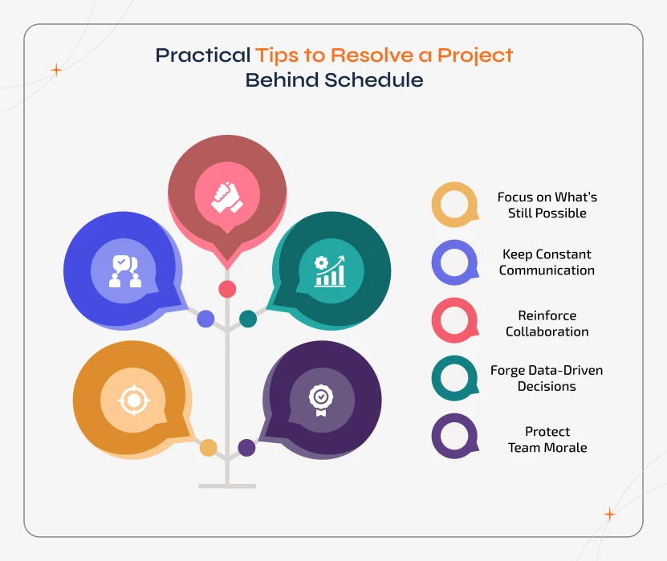
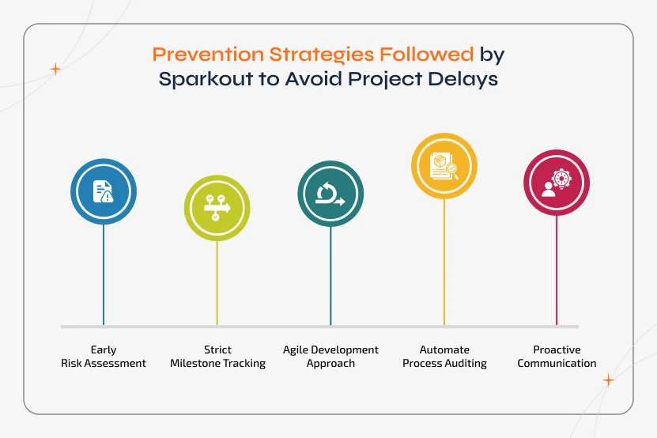

No one ever expects a delay in work, and a project behind schedule often catches everyone off guard. In most cases, middle-level businesses are the ones who get affected the most. The real reason for development delays starts before the code. It begins with undefined goals, rushed decisions, and other related aspects that turn weekly delivery into months.
In this blog, we’ll explore why projects drift off track, the recommended revival steps, and strategies for building a project that delivers on time.
A Brief Understanding of the Project Behind Schedule
A delay in the project happens when the planned progress doesn’t match the real pace of work. From designing to testing, each and every project revolves around multiple stages, and even a small pause in between the workflow will stretch the overall timeline. On a regular basis, everything seems to be alright until something fishy happens that drags the project behind.
In most cases, delays don’t knock on the door before showing up. They gradually grow through everyday decisions, shifting timelines, and evolving expectations. By the time teams realize something’s wrong, the project already carries the burden and feels hard to move any further. Meanwhile, understanding how these delays form will help teams stay aware and act a step before something bad happens.
Potential Causes for the Project Behind Schedule
Every delay has a starting point, and not everyone can spot the flaw at the start. However, by understanding the potential causes, you can spot the misalignment and revive the project and get it back on track.

Unclear Project Scope
If the overall direction of the
project isn’t delivered clearly among teams, without shared knowledge, they start
moving in the wrong direction. The designers, developers, and project managers will
interpret goals differently and act according to their own, which leads to confusion
and rework. Over time, these misalignments will extend the timeline and drain
employees’ energy.
Frequent Requirement Changes
It’s obvious that ideas evolve
and be implemented in the project. However, constant changes during the mid-project
can put the project beyond schedule. Each new feature inclusion means realigning
tasks. This cuts off the software development flow and makes
it harder to maintain consistency.
Inefficient Communication
Missed updates and feedback
always slow down the progress, leading to software project delays. Miscommunication
between the internal teams and clients can lead to repeated work or delayed software
release. A few missed conversations will lead to days of delays.
Imbalance of Resources
A project can’t proceed any further
if the right tools and people aren’t available at the right time. The technical team
often struggle if the workloads are random and the important roles remain unfilled.
These possible gaps do slow down decision-making and minimizes the output.
Technical Flaws
Even if it’s solid
planning, technical issues can appear out of nowhere. Integration bugs, limited
testing setups, and framework compatibility can slow down the progress. Eradicating
these issues will take time and often requires help from multiple teams.
Inside a Business Head’s Struggles When a Project Slips Schedule
Due to missed project deadlines, the business heads often find themselves firefighting all at once, trying to protect both the brand and the teams behind it. Here are the real-time struggles faced by business heads when a project falls behind schedule.

Pressure From Investors
Every missed milestone triggers
unwanted investor check-ins, which forces the business heads to justify the delays,
and the rework is initiated under intense security.
Client Trust Fades Away
If the update lags behind, even
your loyal clients begin questioning the reliability. This makes every communication
feel like damage control rather than collaboration.
Resources Drains Without Results
While the delivery stalls,
salaries, tools, and vendor costs will keep running. This made the burn rate spike
with nothing good to show off, turning every extra week into a financial crisis.
Team Morale & Blame Loops
The head has to manage every
frustration inside the team. In the meantime, pointing fingers at employees can
break the team collaboration.
Reputation at Stake
Due to current
delays, the future delays are even harder to close as partners. This is because they
start doubting the company’s reliability over a single delayed project.
Practical Tips to Resolve a Project Behind Schedule
At a certain point, when the direction changes, every project faces problems or difficulties. What matters the most is how fast the team bounces back after the software timeline issues. Here are some practical tips that we recommend to bring the delayed project back in shape without hindering the team.

1. Focus on What’s Still Possible
Instead of keeping on
stressing over the past, start focusing on what can still be delivered in time. Cut
off unnecessary tasks and push updates that matter the most to the targeted users. A
partial work release is far better than a perfect one that never launches.
2. Keep Constant Communication
The fastest and most
reliable way to recover time is by clearing up the confusion. Keep the conversations
short and conduct daily sprints to rectify the issues quickly. Also, try to keep
everyone on the same page, so the decision proceeds faster and progress stays
visible.
3. Reinforce Collaboration
If work pressure rises, teams
often start to work on their own path, neglecting the primary goal. When you notice
this happens, pull them back together. Shared goals, deadlines, and dependencies
help teams to act in sync and avoid wasted effort.
4. Forge Data-Driven Decisions
If the time isn’t flexible,
don’t ever rely on assumptions. Use criteria like bug counts, and cycle time to view
where the app project delay actually originates from. Data gives you clarity,
helping when to adjust the scope and switch tools.
5. Protect Team Morale
A project that
went behind schedule can easily turn into a blaming game. Instead of pointing out
others, try to encourage progress over perfection. Recognize small wins, keep
positive communication, and ensure the team feels supported.
Managing a Project Behind Schedule Efficiently With the Help of Special Tools
Behind every successful project, there’s a set of tools and frameworks that keep things hold together. Here are the tools we use at Sparkout to help your project stay connected in today’s trends.
Project Planning & Tracking
By using platforms like Trello
and Asana, we break complex projects into smaller achievable goals. This helps our
team to identify potential blockers early and helps in setting a clear milestone,
making sure every task runs smoothly without confusion.
Real-Time Communication Channels
We keep the communication
engaging and straightforward with tools like Microsoft Teams and Slack. With these
tools, instant feedback, quick syncs, and transparent updates happen smoothly. It
doesn’t affect even if multiple teams are working under tight deadlines.
Organized Design Workflow Tools
Utilizing platforms like
Figma and Adobe Photoshop, our design teams work in real-time across screens and
components. Live collaboration, shared libraries, and version history help teams to
cut off review time and unnecessary edits.
Reliable Version Control Systems
Alongside GitHub and
GitLab, our developers work seamlessly across modules without any disturbances.
Version control ensures that feature updates, bug fixes, and integrations happen
smoothly.
Automated Build & Deployment
Bitrise and Jenkins are the
two automation tools that we use to cut down repetitive manual work. With these
tools, continuous integration and testing become smooth and allow faster deployment.
This helps us meet new timelines without sacrificing the quality..
Data-Backed Project Insights
With Power BI and Notion, we build dashboards that give
us live visibility on the ongoing project. Further, they highlight progress gaps,
performance trends and resource flaws and let teams take quick actions to keep
everything live.
Prevention Strategies Followed by Sparkout to Avoid Project Delays
Here are the five practical prevention strategies followed by Sparkout to implement on projects that are running behind schedule.
- Early Risk Assessment: Pinpointing potential roadblocks during the initial stages to prevent last-minute software delivery delay.
- Strict Milestone Tracking: Keep on monitoring progress at every development stage to grasp and fix the flaws early.
- Agile Development Approach: Using regular sprints and feedback loops to adapt quickly to evolving trends and accelerate development.
- Automate Process Auditing: Implementing CI/CD tools to auto-track the code, helping teams to stay accountable.
- Proactive Communication: Maintaining transparent updates among teams and clients to ensure alignment.
Why Choose Sparkout to Fasten Your Project
It is obvious to take risks while developing an IT project. What matters the most is More than just extra hands, a software project rescue needs a dedicated team that knows how to regain lost time without losing direction. This is where Sparkout steps in, resolving web or app development delays and getting the project back on track.

Proven Expertise
From small startups to large enterprises,
we handled projects across multiple domains. With our years of experience, we help
you identify flaws and apply relevant solutions that save time and improve
efficiency.
Transparent Workflow
We keep our clients in the loop at
each and every step. By following structured sprints, transparent communication, and
measurable progress tracking, we keep updating on how close your project is.
Tool-Driven Acceleration
Our approach is powered by the
right tools and frameworks. From Trello for project planning to Power BI to get
insights, every platform that we pick is to reduce potential flaws and speed up the
development cycle.
Dedicated Recovery Teams
Our firm has
specialists in development, design, and QA to focus thoroughly on project recovery.
Our main focus is to get your project back on track, stabilize delivery, and ensure
it goes live at its full potential.
The Timeline for our Project Delivery
At Sparkout, our delivery timelines are arranged in order to keep your projects moving smoothly, even with tight deadlines. We begin with ‘discovery and planning’ in the first weeks, where we set transparent goals, milestones, and deliverables. Followed by the ‘design and prototyping’ phase, giving our clients a visual direction before development.
From there, Sparkout’s ‘development cycle’ runs through the upcoming weeks. In this phase, we focus on building, testing, and refining the core features through an agile approach. Once the foundation is ready, our ‘QA and optimization’ phase starts, ensuring the product performs flawlessly across devices.
Finally, after going through all the stages within the timeline, we prepare for launch. During this time, we ensure post-release monitoring and support beyond the deployment. Overall, this kind of structured timeline keeps every phase transparent, boosting the projects to move faster without losing the quality.
End Note
A project beyond schedule doesn’t always mean it’s a complete failure. Sometimes, it’s just a wake-up call to cross-check the priorities and realign the goals properly. When teams actually understand where the process slips, they get the clarity needed to rebuild a robust plan that actually works.
Each and every delay gives us a lesson. By blending open communication, structural approach, and the right frameworks, even a project beyond schedule can get back on track and can exceed our expectations.